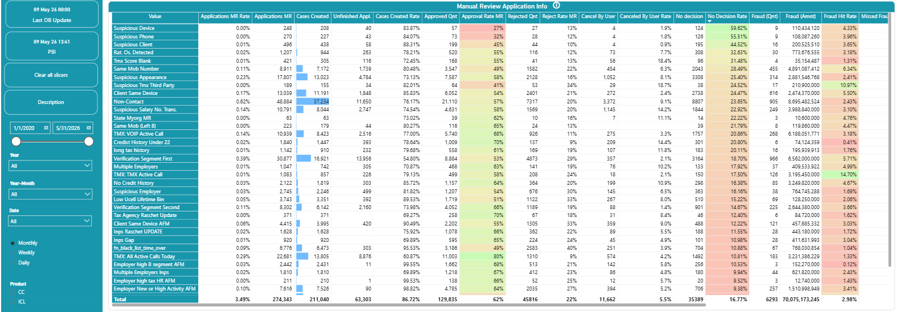
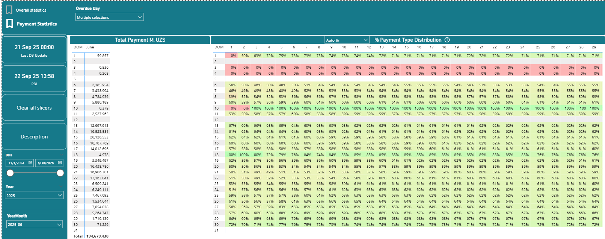
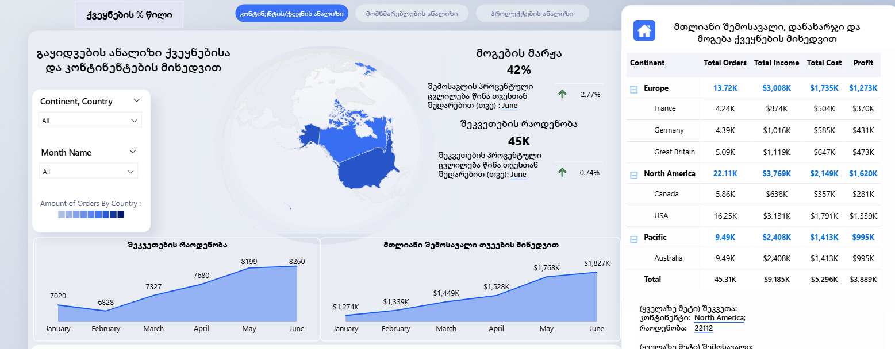

An interactive Power BI dashboard built to analyse the repayment behaviour of overdue loans at TBC Bank Uzbekistan. The report groups loans into cohorts based on when they became due, then tracks how many days passed before each loan was repaid — giving the risk team a clear picture of repayment patterns, delays, and potential problem areas across different time periods.
DASHBOARD VIEWS
A fraud and risk detection table showing every suspicious behaviour type flagged during loan application processing. Each row represents a fraud signal (e.g. Suspicious Device, Same Mobile Number, No Credit History) with full metrics across the review pipeline.
- Tracks Applications MR Rate, Cases Created, Approval Rate, and Rejection Rate per fraud signal
- Fraud quantity, fraud amount, and fraud hit rate calculated per category using DAX
- Conditional colour coding instantly highlights high-risk signal types
- Slicers for Product (CC/ICL), Date range, Year, and Monthly/Weekly/Daily granularity

Click image to enlarge
The core cohort analysis view. Rows represent the Day of Month (DOM) a loan became due. Columns show each subsequent day. Each cell shows the % of that cohort's total payment collected by that day — revealing exactly how repayment behaviour evolves over time.
- Left table: Total Payment in M. UZS by Day of Month cohort
- Right matrix: % Payment Type Distribution — how repayments spread day by day per cohort
- Conditional formatting (red → green) immediately shows fast vs slow-paying cohorts
- Date slicer, Year and YearMonth filters for period-level drill-down

Click image to enlarge
A geographic breakdown of sales performance by continent and country. Shows order volumes, total income, costs, and profit across Europe, North America, and Pacific regions — with a world map visual and trend lines for monthly order and income growth.
- World map visual with order density shading by country
- Profit margin: 42% overall — broken down per continent and country
- Monthly trend lines for order count (45K total) and total income ($9.2M)
- Drillable hierarchy: Continent → Country with income, cost, and profit columns

Click image to enlarge
DAX FUNCTIONS USED
The building blocks of every DAX measure — used for straightforward aggregations and conditional logic.
| Function |
Syntax |
What it does |
| SUM |
SUM(Table[Column]) |
Adds up all values in a column. Used for total loan amounts, payment totals. |
| COUNT |
COUNT(Table[Column]) |
Counts how many rows have a value. Used for number of applications, cases created. |
| AVERAGE |
AVERAGE(Table[Column]) |
Returns the mean of all values. Used for average approval rate, average fraud hit rate. |
| DIVIDE |
DIVIDE(numerator, denominator, 0) |
Safe division — returns 0 instead of error when dividing by zero. Used for all rate calculations. |
| IF |
IF(condition, true, false) |
Returns one value if a condition is true, another if false. Used for flagging overdue loans. |
| DISTINCTCOUNT |
DISTINCTCOUNT(Table[Column]) |
Counts unique values only. Used for counting unique borrowers, unique fraud signal types. |
The most powerful DAX functions — they change the filter context, allowing you to compute measures under specific conditions.
| Function |
Syntax |
What it does |
| CALCULATE |
CALCULATE(expression, filter1, filter2) |
Evaluates a measure under modified filters. Example: total fraud amount only for approved cases. |
| FILTER |
FILTER(Table, condition) |
Returns a filtered table. Used inside CALCULATE to narrow down to specific cohorts or date ranges. |
| ALL |
ALL(Table[Column]) |
Removes filters from a column — used to calculate totals regardless of slicer selection. |
| ALLSELECTED |
ALLSELECTED(Table[Column]) |
Keeps slicer filters but removes row/column context. Used for % of selected total calculations. |
X functions iterate row by row through a table, perform a calculation on each row, then aggregate the results. More flexible than simple aggregations when you need row-level logic.
| Function |
Syntax |
What it does |
| SUMX |
SUMX(Table, expression) |
Calculates an expression for each row then sums the results. Example: SUMX(Loans, [Amount] * [Rate]) to get weighted totals. |
| AVERAGEX |
AVERAGEX(Table, expression) |
Same as SUMX but returns the average. Used for average repayment rate per cohort row. |
| COUNTX |
COUNTX(Table, expression) |
Counts rows where the expression returns a non-blank value. Used for counting valid fraud cases per type. |
| MAXX |
MAXX(Table, expression) |
Returns the maximum result across all rows. Used for finding the peak overdue day per cohort. |
| MINX |
MINX(Table, expression) |
Returns the minimum result across all rows. Used for earliest repayment day in a cohort. |
Used to group data and compute aggregations — the DAX equivalent of SQL's GROUP BY. Essential for building cohort-level summaries.
| Function |
Syntax |
What it does |
| SUMMARIZE |
SUMMARIZE(Table, GroupBy, "Name", expr) |
Groups a table by one or more columns and adds calculated columns. Like SQL GROUP BY. Used to summarise payments per cohort date. |
| SUMMARIZECOLUMNS |
SUMMARIZECOLUMNS(GroupBy, filter, "Name", expr) |
More powerful version of SUMMARIZE — supports filters and is optimised for large datasets. Used for the cohort matrix data model. |
| ADDCOLUMNS |
ADDCOLUMNS(Table, "Name", expr) |
Adds calculated columns to an existing table without grouping. Used to enrich cohort tables with computed metrics. |
| GROUPBY |
GROUPBY(Table, GroupBy, "Name", expr) |
Similar to SUMMARIZE but works within the current filter context. Used for dynamic groupings inside measures. |
Powerful but rarely taught DAX functions that solve problems most people struggle with using basic aggregations.
| Function |
Syntax |
What it does |
| VALUES | VALUES(Table[Column]) | Returns unique values in the current filter context. Unlike DISTINCT, it includes blank rows from relationships. Used when iterating over filtered unique values. |
| SELECTEDVALUE | SELECTEDVALUE(Column, default) | Returns the column value when only one is filtered — returns default otherwise. Perfect for showing the selected slicer value in a card title. |
| HASONEVALUE | HASONEVALUE(Table[Column]) | Returns TRUE if only one value exists in the current context. Used to guard calculations that only make sense for a single selection. |
| ISINSCOPE | ISINSCOPE(Table[Column]) | Returns TRUE when a column is in the current grouping level of a matrix. Used to show subtotals and grand totals differently in the same measure. |
| EARLIER | EARLIER(Table[Column]) | References a column value from an outer row context during nested iteration. Used in calculated columns to compare each row against others in the same table. |
| USERELATIONSHIP | USERELATIONSHIP(col1, col2) | Activates an inactive relationship for a specific measure. Essential in date tables with multiple date columns — e.g. due date vs payment date. |
| KEEPFILTERS | CALCULATE(expr, KEEPFILTERS(filter)) | Adds a filter without removing existing ones — opposite of CALCULATE's default which replaces filters. Prevents unexpected results in complex filter contexts. |
| TREATAS | TREATAS(table, col1, col2) | Applies a virtual relationship between tables that aren't physically related. Useful for dynamic segmentation without changing the data model. |
| CROSSFILTER | CROSSFILTER(col1, col2, direction) | Changes filter direction of a relationship for one measure only — useful when you need bidirectional filtering for a specific calculation. |
| NAMEOF | NAMEOF(Table[Column]) | Returns the name of a column or measure as a string. Useful for dynamic titles that auto-update when a measure is renamed. |
Patterns you actually use in production dashboards — combinations of multiple functions solving real business problems.
📈 Running Total (Cumulative Sum)
Running Total =
CALCULATE(
SUM(Payments[Amount]),
FILTER(
ALL(Dates[Date]),
Dates[Date] <= MAX(Dates[Date])
)
)
Keeps adding to the total as dates increase. ALL() removes the date filter, then FILTER re-applies it up to the current date. Used to show cumulative payments collected over time.
📊 % of Total
% of Total =
DIVIDE(
SUM(Loans[Amount]),
CALCULATE(SUM(Loans[Amount]), ALL(Loans))
)
Divides each row's value by the grand total. ALL(Loans) removes all filters to get the full total. Used for fraud share % and repayment share per cohort.
🔄 Month-over-Month Change %
Last Month =
CALCULATE(SUM(Sales[Amount]), DATEADD(Dates[Date], -1, MONTH))
MoM Change % =
DIVIDE(SUM(Sales[Amount]) - [Last Month], [Last Month])
DATEADD shifts the date context back by 1 month. Subtracting gives the absolute change, dividing gives the % change. Used for MoM growth on income and order count cards.
🏆 Rank (Top N by Value)
Fraud Rank =
RANKX(
ALL(FraudTypes[Name]),
[Fraud Amount],
,
DESC,
DENSE
)
Ranks each fraud type by total fraud amount. ALL() ensures every type is ranked against the full list regardless of filters. DENSE means no gaps (1,2,2,3 not 1,2,2,4).
📅 Dynamic Title from Slicer
Chart Title =
"Payments for " &
SELECTEDVALUE(Dates[YearMonth], "All Periods")
Builds a text string that changes based on slicer selection. If one month is selected shows "Payments for 2025-06". If multiple or none selected, shows "Payments for All Periods". Used for dynamic dashboard titles.
🎯 Cohort Repayment Rate
Repayment Rate % =
DIVIDE(
CALCULATE(
SUM(Loans[PaidAmount]),
Loans[Status] = "Paid"
),
SUM(Loans[DueAmount])
)
The core cohort measure — what % of due amount was actually paid. CALCULATE filters to "Paid" loans for the numerator. DIVIDE handles zero due amounts. This powers every cell in the cohort matrix.
🔢 Moving Average (7-day)
7-Day Avg =
AVERAGEX(
DATESINPERIOD(
Dates[Date],
LASTDATE(Dates[Date]),
-7,
DAY
),
[Total Payments]
)
Calculates the average of the last 7 days for each point on the chart. DATESINPERIOD returns a table of the last 7 dates. AVERAGEX then evaluates Total Payments for each of those days and averages them. Smooths out daily spikes.